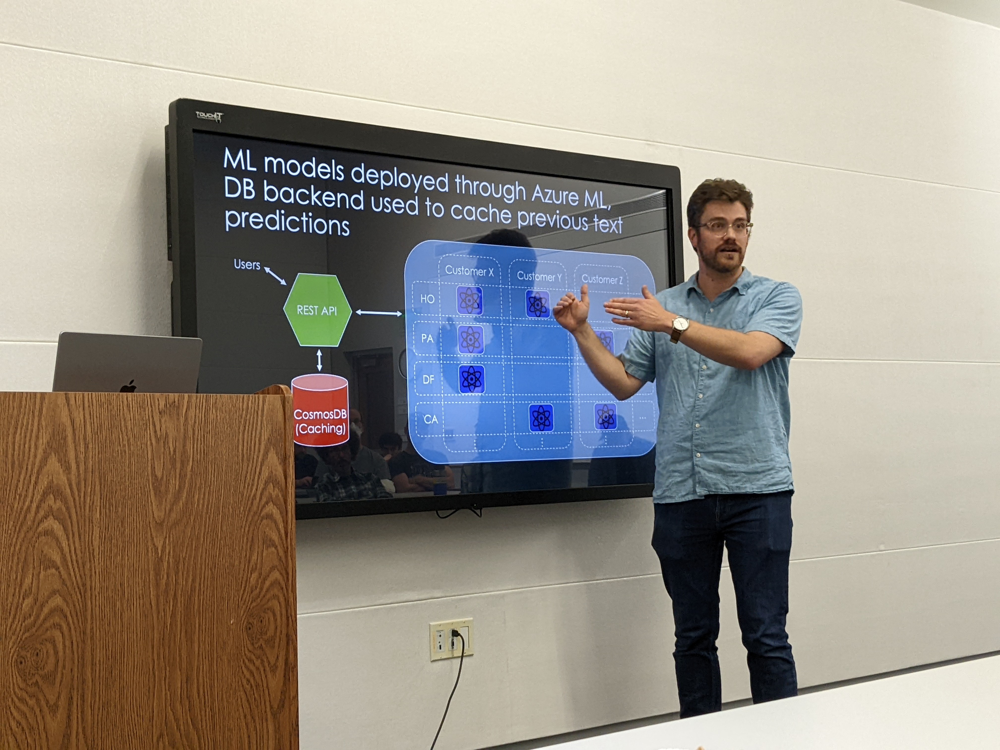

With the release of models such as BERT, ChatGPT and DALL-E-2, Natural Language Processing (NLP) models have captured the world's imagination. While many NLP models are open-sourced, integrating these models into an end-product remains challenging in many cases. In this talk, Adam will show how the popular Python web framework FastAPI can be used to make cutting-edge NLP models available to end-users in a fast and standards-based way. While the use-case in this talk revolves around machine learning, the benefits of FastAPI extend into many other fields; no prior knowledge of ML required!
Adam Frees is a Principal Data Scientist at Majesco, a leader in the Insurtech space. He received his Bachelors from Brown University and a PhD in physics from UW-Madison. As a software developer at Epic Systems, he used Python and ML to leverage over 60 million patients' medical history. At Majesco, he now trains, tests and deploys Computer Vision and NLP models targeted towards the Property and Casualty Insurance space.